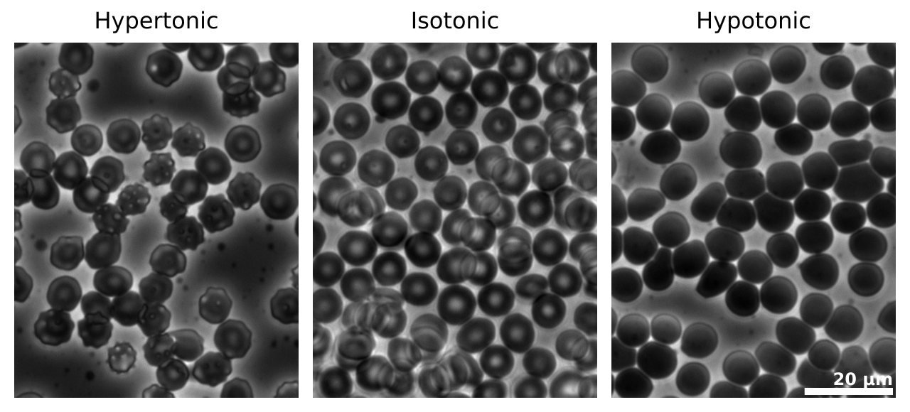

Ósmosis, Van 't Hoff y por qué el agua salada no quita la sed
Alguien perdido en el mar está rodeado de agua y se muere de sed. No es una ironía: es física. El agua atraviesa las membranas de nuestras células y va hacia donde hay más sal, con una fuerza que, en el agua de mar, equivale a la presión de cientos de metros de columna de agua.
Las membranas suelen ser semipermeables: dejan pasar unas moléculas y otras no. Una forma es tener poros tan chicos que solo atraviesan las moléculas pequeñas [1]. Si de un lado hay agua pura y del otro una solución, el agua pasa hacia la solución: eso es la ósmosis [2].
El nivel de la solución sube, aumenta su presión hidrostática, y eso acelera el paso de agua en sentido contrario. Cuando los dos flujos se igualan, el paso neto se detiene. La presión de ese momento es la presión osmótica Π [2]. Para soluciones diluidas, vale [2]:
La fórmula se parece a la de un gas ideal, y la similitud es útil: las partículas disueltas son las que cuentan, no qué partículas son.
La concentración de iones del agua de mar es similar a la de 4,2 gramos de cloruro de sodio en 125 gramos de agua [2], unos 0,57 mol por litro, si tomamos 1 litro de agua por kilo. Como la sal se separa en dos iones, i ≈ 2. A 25 °C, Π ≈ 28 atmósferas: unos 2,8 MPa (cálculos propios, con solución ideal). Equivale a una columna de agua de unos 290 metros.
Por eso, para sacarle la sal al mar hay que hacer fuerza. Si se aplica una presión mayor que la osmótica, el proceso se invierte: es la ósmosis inversa, que se usa para desalinizar a gran escala [2].
Un molinete que solo deja pasar agua: del lado del agua pura, todo lo que llega al molinete es agua. Del lado salado, parte de lo que llega son iones que rebotan, y pasa menos agua por segundo. El resultado es un flujo neto hacia el lado salado.
Las soluciones que se inyectan en el cuerpo tienen que tener la misma presión osmótica que el suero: ser isotónicas [2]. Si la solución es menos concentrada (hipotónica), el agua entra a los glóbulos rojos y estos se hinchan y pueden romperse: es la hemólisis [2]. Si es más concentrada (hipertónica), los glóbulos pierden agua y se arrugan [2].

La NOAA lo explica en dos pasos. Los riñones humanos solo pueden producir orina menos salada que el agua de mar. Por eso, para eliminar toda la sal que entra al beberla, habría que orinar más agua de la que se tomó [3]. El resultado es deshidratarse mientras la sed aumenta [3]. Beber agua de mar da sal, y sacarse esa sal cuesta agua.
La misma física en los capilares: las proteínas del plasma no pueden atravesar la pared del capilar, y por eso generan una presión que atrae agua hacia la sangre. Es la pieza que completa las fuerzas de Starling. Y en las plantas, la presión osmótica ayuda a meter agua en las raíces, aunque lo que sube la savia es otra cosa.
El agua atraviesa las membranas hacia donde hay más partículas disueltas, y la presión necesaria para frenarla es la presión osmótica. En el agua de mar son unas 28 atmósferas. Es el motivo por el que desalinizar exige bombas potentes, y el motivo por el que tomar agua salada deshidrata: tus riñones no pueden concentrar tanto la sal.
Pregunta para la comunidad: ¿Por qué salar una ensalada mucho antes de comerla la deja blanda y con líquido en el fondo? ¿Y por qué las pasas de uva se hinchan en agua?